TUGAS PERORANGAN/INDIVIDU
LAPORAN JOBSHEET 2
Typescript
Disusun Sebagai:
MATA KULIAH: PEMROGRAMAN WEB LANJUT
Oleh:
Moh. Khoirul Arifin/1741720051
TI-2B

PROGRAM STUDI D-IV TEKNIK INFORMATIKA
JURUSAN TEKNOLOGI INFORMASI
POLITEKNIK NEGERI MALANG
2019
Praktikum – Bagian 1: Instalasi Typescript
- Soal 1
Cara mengistal typescript dengan perintah berikut
npm install -g typescript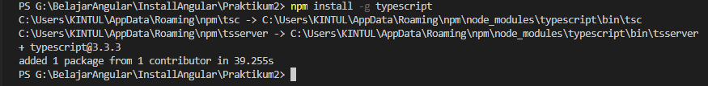
Soal 2 Cek version dari typescript yang terinstall
tsc --version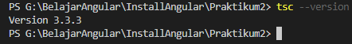Membuat folder ts-hello menggunakan
mkdir ts-hello- Tulisakan file main.ts dengan code berikut:
function log(message) {
console.log(message);
}
let message = "Hello World";
log(message);
Kemudian ketik perintah
tsc main.tsuntuk melakukan transpile file typescript kedalam javascriptSoal 3 Cek apakah sudah terbuat file main.js, lakukan perintah
ls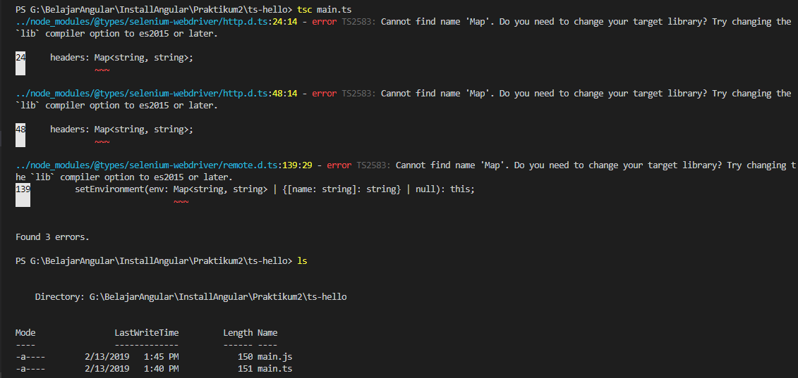 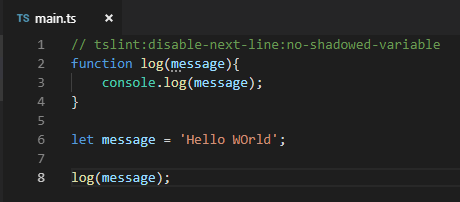
- Soal 4
Buka file javascript, perhatikan apakah sama isi dari file main.ts dan
main.js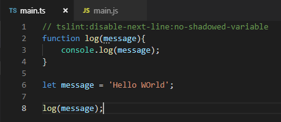 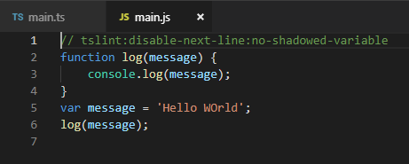
- Soal 5
Lakukan execute pada file main.js dengan perintah
node main.js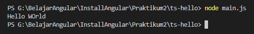
Praktikum - Bagian 2: Declaring Variables
- Buka file main.ts, kemudian tulis code berikut:
function doSomething(){ for (let i = 0; i < 5; i++){ console.log(i); } console.log('Finally: ' + i); } doSomething();
- Soal 6
Remove file main.js hasil praktikum bagian 1 dengan perintah
rm main.js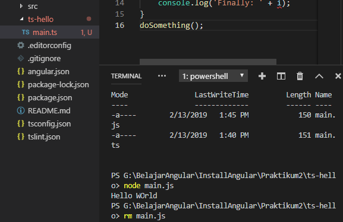
- Soal 7 Lakukan transpile file main.ts dengan perintah yang ada pada praktikum bagian 1 langkah No 10
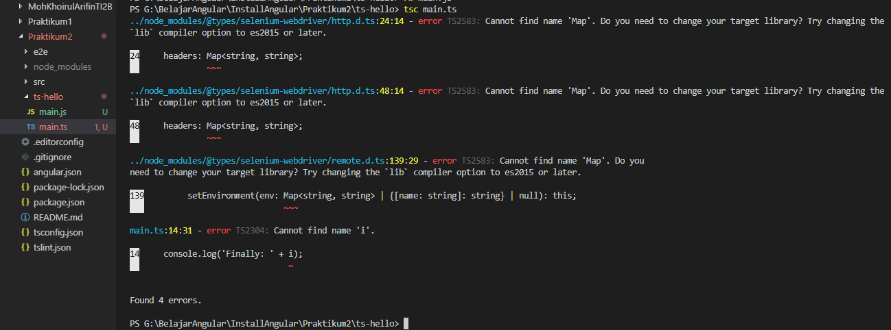
- Soal 8
Execute file javascript dengan perintah
node main.js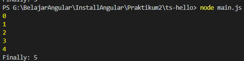
Praktikum - Bagian 3: Types
Buka file main.ts, kemudian tuliskan listing program berikut:
let count =5; count = 'a';Akan terdapat masalah pada file main.ts 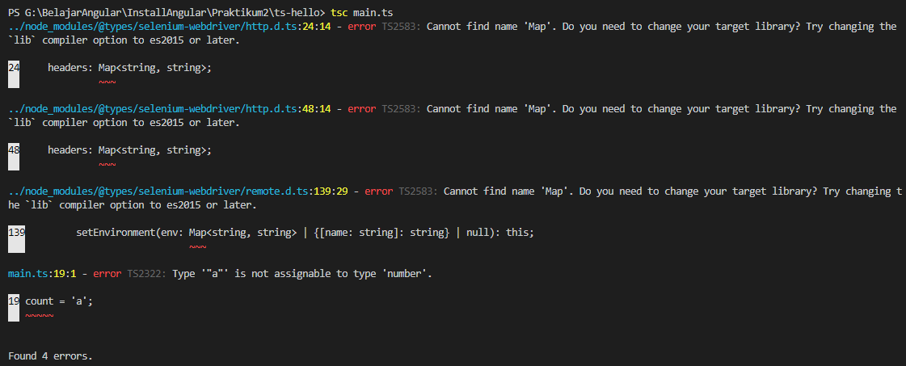
Soal 9 Lakukan proses transpile file main.ts dengan perintah
tsc main.ts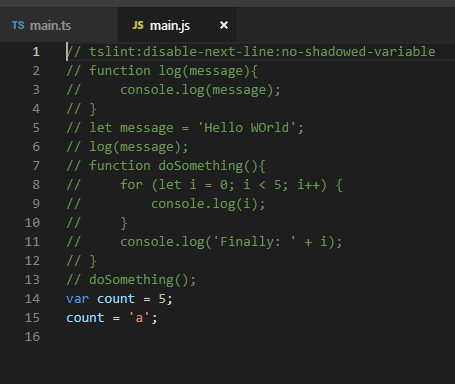Hasil transpile file main.ts, menghasilkan file main.js seperti beriku:
var count = 5; count = 'a';
Praktikum – Bagian 4: Type Assertion
Buka file main.ts, kemudian tuliskan code berikut:
let pesan; pesan='abc'; let percobaan=(<string>pesan).endsWith('c'); let alternative=(pesan as string).endsWith('c');Soal 10 Remove file main.js sebelumnya, lalu Lakukan proses transpile file main.ts dengan perintah
tsc main.ts. Hasil file main.jsvar pesan; pesan = 'abc'; var percobaan = pesan.endsWith('c'); var alternative = pesan.endsWith('c');
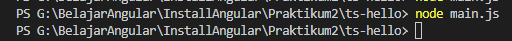
Praktikum – Bagian 5: Arrow Function
- Buka file main.ts, kemudian tuliskan code berikut:
let log = function pesan(){
console.log();
}
//kode diatas bisa disingkat menggunakan fungsi arrow
let doLog=(pesan)=>{
console.log(pesan);
}
//atau seperti berikut
let doLog1=(pesan)=>console.log(pesan);
- Soal 11
Remove file main.js sebelumnya, lalu Lakukan proses transpile file main.ts dengan perintah
tsc main.ts. Hasil file main.jsvar log = function pesan() { console.log(); }; //kode diatas bisa disingkat menggunakan fungsi arrow var doLog = function (pesan) { console.log(pesan); }; //atau seperti berikut var doLog1 = function (pesan) { return console.log(pesan); };
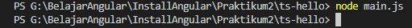
- Soal 12
Remove file main.js sebelumnya, lalu Lakukan proses transpile file main.ts dengan perintah
tsc main.ts. Hasil file main.jsvar drawPoint = function (point) { //... }; drawPoint({ x: 1, y: 3 });
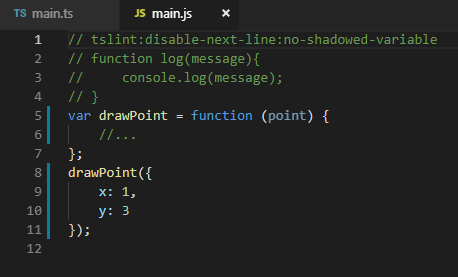 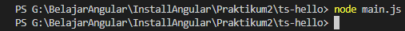
Praktikum – Bagian 7: Classes
Buka file main.ts, kemudian tuliskan code berikut:
class Pointku{ a:number; b:number; draw(){ //... } getDistance(another:Pointku){ //... } }
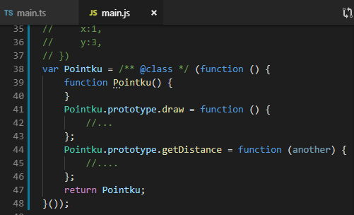 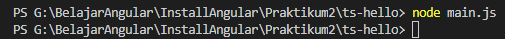
Praktikum – Bagian 8: Objects
Buka file main.ts, kemudian tuliskan code berikut:
class Pointku{ a:number; b:number; draw(){ console.log('X' + this.a + ',Y' + this.b); } getDistance(another:Pointku){ //... } }
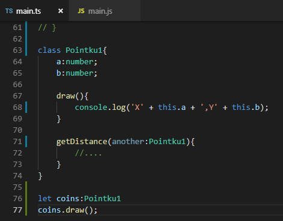 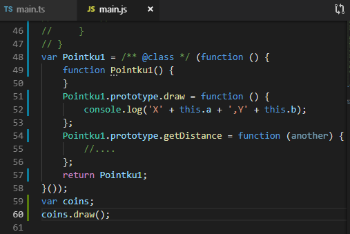 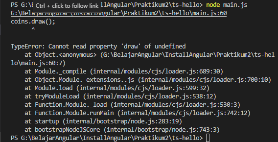